(The following is the transcript of "Brewing Oddworld: Soulstorm with Lorne Lanning". I ripped the subtitles of the video using this website and then manually formatted, punctuated and fixed it up. However, as I'm not a native English speaker, some errors may still be present. Still, I hope it might be of some worth to some, who don't want to watch the video again, but would still like to reiterate the talk.)
The transcript is also available without pictures and in text format.
Lorne Lanning, EGX, 2017:
Hey everyone! Hey, it works! Hi everyone, thanks for coming. I wanted to thank EGX, because they were really generous. They gave us this whole room and invited us out to talk about things. And so that was great. It was worth the 14 hour flight to see you all here, so thank you. So this 20 years ago Abe... 20 years ago! I started dreaming of Abe and setting the foundations for the story that would in years to come become the company 25 years ago. And somehow you know just even the other day like Abe Games from 20 years ago the original Abe keeps on selling and people keep on liking it and that was just a total shock, but I'm gonna shine a little more light on what the whole idea was from the beginning, and how we see Soulstorm as an opportunity to sort of reboot what the original vision was and in the meantime these are some of the groups that are working on the project around the world:
So we're managing about four time zones on the phone every day and sharing screen thank God for Skype, thank God for Slack, thank God for Trello. Any of you in production I think you'll know what I'm talking about but it allows us to actually do production on the run, on iPhones, like it's amazing. So this has been in motion, these are people working on it there will be more by the time we're done, so it's quite an effort. And I wanted to recap a little bit about why the decisions we've made on Soulstorm and what it actually is. So when we did New 'n' Tasty- [cough] Excuse me! When we did New 'n' Tasty, we saw that as an opportunity to sort of redo a classic fable that we felt good about how it kicked off the original idea for the Oddworld Quintology which was supposed to be a five-piece epic that eventually would unfold. But the truth is, you know, time, business, partnerships, realities, new consoles, those realities helped kind of steer us a little bit in a different direction and without getting into all the details there's no sour grapes but that's just time and reality and it changes a lot of things and it influences a lot of things. But with the success of New 'n' Tasty and the way we saw New 'n' Tasty, which was it was a fable that we wanted to keep the original script. We wanted to keep the original ignition of what that story - a beginning of Abe - was. So we rebuilt a 20th century story retaining the same script and we did it with 21st century technology. That was New 'n' Tasty and we had asked the audience, we had asked the fans when we were starting to make New 'n' Tasty "If we succeed with this and you're happy with us and you don't want us to just go away, what would you like us to do next?" And to our surprise people were saying Abe's Exoddus. That was the highest ranking redo and we were like all "Oh! Huh." So Exoddus was kind of an emergency game for us. It was supposed to be the second game in the Oddworld Quintology. And I had this big vision of what that game was going to be and... But the reality was was we needed to provide our partner a game in nine months, and that was not our plan. So what happens is the story of Exoddus got reshaped into something that wasn't really in line with that original vision. And maybe that was okay, because at the time I wasn't as experienced a game designer and I was really overshooting the boundaries of what I thought we could do. It was related to the brew, it was all related to flammable liquids, highly volatile environments, in a slightly different storyline. And so it became something that wasn't the original intention the crew did a great job, the team did a great job executing it. But I saw this years later:
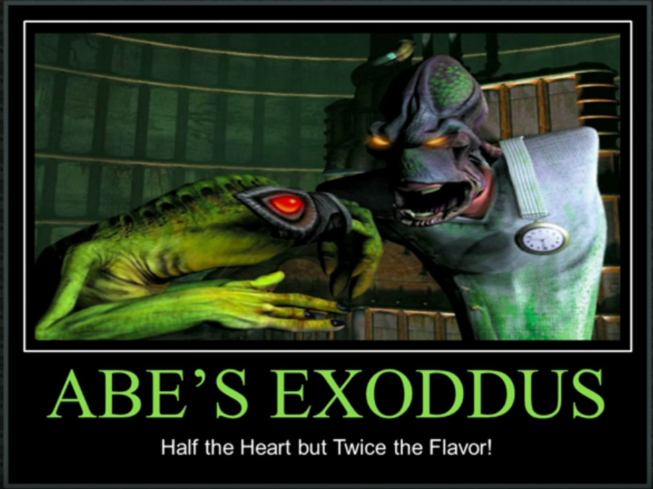It was in the demotivational posters section of the web somewhere and I agreed, right? I agreed that it was kind of half the heart, but it was twice the game, a lot of people liked the game better, but they felt like it lost some of what made a Abe a little more dark and mysterious and full of heart. And time and reality can do that at times. So we said "Well if we're going to readdress the idea of Exoddus, let's go all the way!" So let's scrap the Exoddus that you saw and you knew, and let's go fresh back to that original vision, but now on top of the side-scrolling platformer genre and turn the volume up to 11 on a lot of different levels. So this is a brand new game. It's brand new.
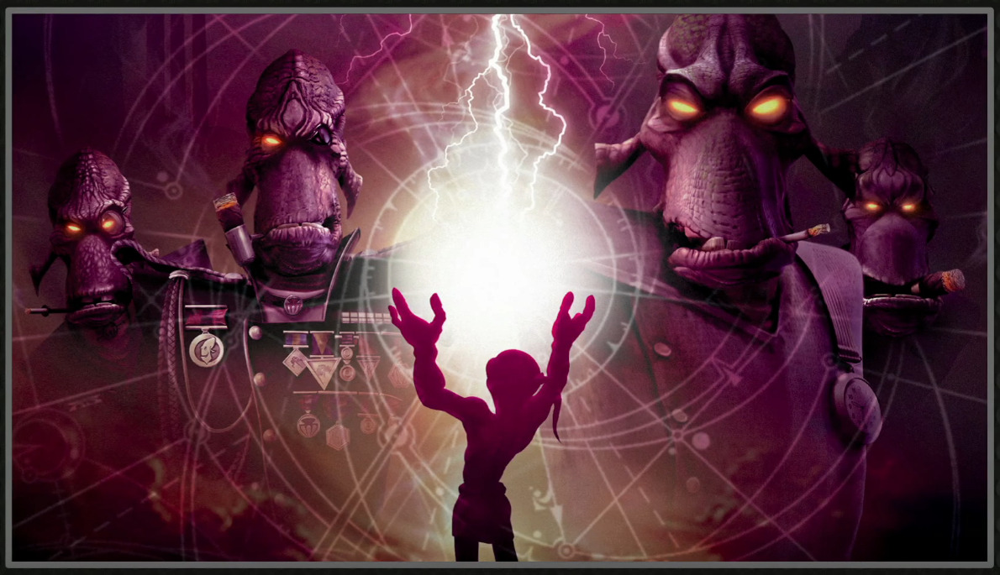
And the original vision of it was much more epic, we really wanted that deeper story, we wanted to get deeper into the characters, we'd get deeper into the world, and deeper into the actions that Abe would evolve upon. And along the way when we were creating this IP one of the things I was fascinated about was: What is it that... How do you create a brand that people felt this strongly about, that when I grew up there was a lot of like outlaw biker culture around me, there was a lot of a lot of women had like Beatles lyrics tattooed on their arms and I would see like this deep passion for properties and creation that other people have made that people were willing to make this type of a commitment to and I was like: "Wow, how do you build something that people feel that strongly about?" And it usually came back to depth and it usually came back to, it meant something much more to them than just a company or a logo that they thought was cool. It meant a lifestyle, it meant a way of living, it meant something deeper that resonated with them on a deeper level. And we started shaping Oddworld that way that we wanted you - the fans - to feel like, how... What I believe led to great IPs Star Trek, Star Wars, movies, Kubrick movies, things like this, where you feel that the creators have a lot more depth and research into that then you're able to discover. Game of Thrones, you guys watch Game of Thrones? Yeah, yeah. No? You know, watch Game of Thrones! It's sex and everything man! Sex and Dragons! It's like... Yeah it's like... Oh you gotta check it out. Yeah it's pretty cool...
So that depth we really wanted you to feel, and then as our games started coming out, we started to see people actually making this greater commitment, which is the characters were resonating on a different level.
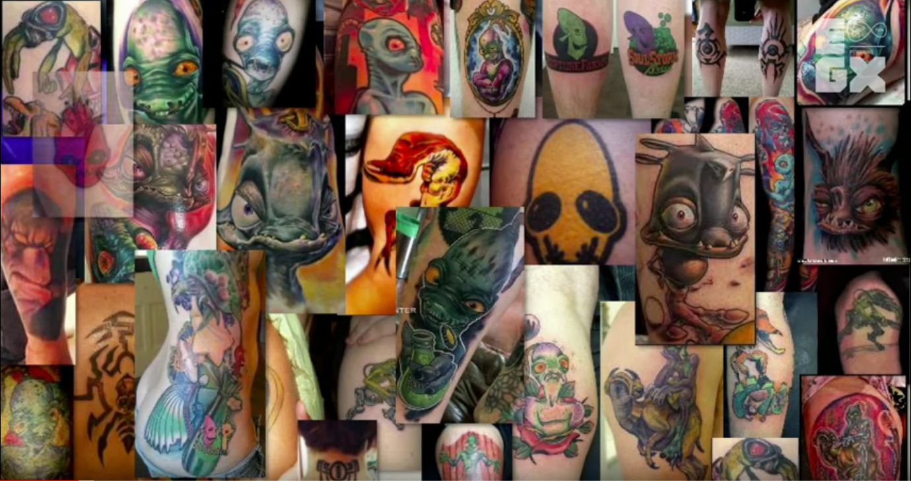And that was leading to this like flurry of challenges for us which was like how do we readdress when people have solidified something, and if we decide to start changing things, you know. Does that mean more death threats? Does that mean like where is this going to go if we screw up what these people felt this strongly about? And this is just a fraction of what we've seen out there, and so it gave us a different sense of pressure of really trying to retain that original intention and deepening and thickening it, rather than just becoming an IP that's being exploited because it makes good business sense blah blah blah, you know, we see that all over the world. But we wanted our games to get better with time and we wanted the property to get deeper with time. And what was it really based on in the first place? So the Oddworld Quintology was really about, you know, these are these are historic control systems.
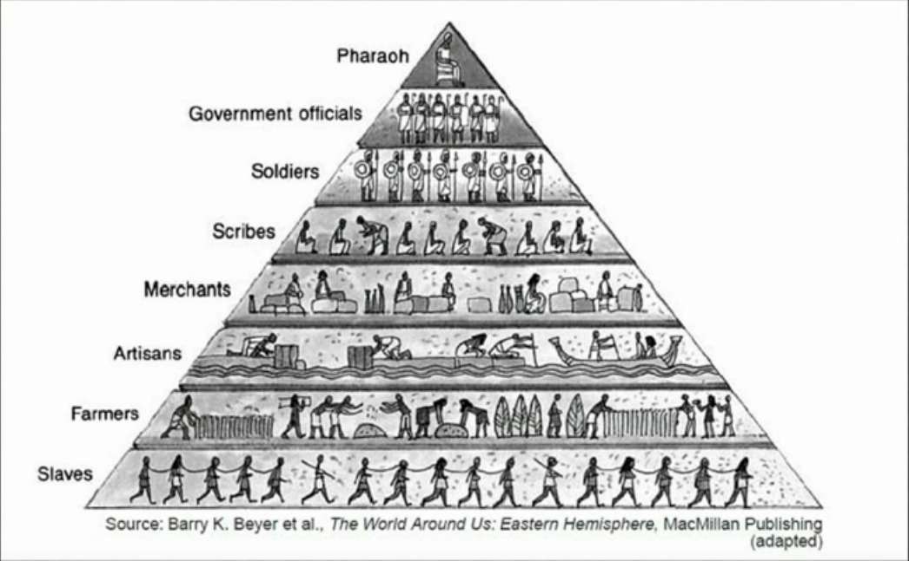And I was always fascinated with... My family had a lot of history in a lot of different ways, whether it was the Bolshevik Revolution Latvian, there was the Native Americans, part Native American, like you know people have had a lot of difficult times through Earth's history. So this was even back to the Egyptian period of how it was looked at for control systems where are we probably most of us, right?
[Lanning points at the "Slaves" part of the pyramid.]
And where is like Pharaoh, right? Today that's CEO of JP Morgan or something, you know.
[Lanning points up to the "Pharaoh" part of the pyramid.]
And so for Oddworld we were looking at it, we go: "This was Oddworld's population control structure." And really this was... So we got the... at the top you've got Ancient Financial- You know, it's kind of like the Illuminati, you know pyramid idea, that you all probably see on the web and stuff like this at different times.
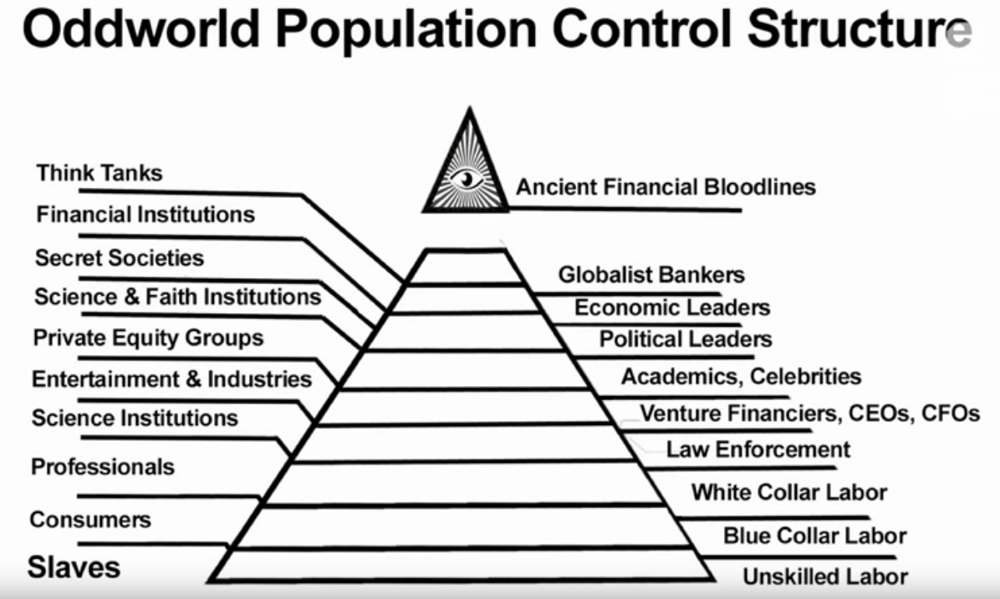And Oddworld was always supposed to be this sort of dark side of globalization reflecting the real world. So whether or not the real world is this way, it's great material to mess with, you know, it's just like great fodder. And so at the top we've got like the oldest money families in the world and they control dollars and think tanks and globalist bankers an economic level, all the way down you got the majority and on Oddworld we call that the 99.9987% and that is where Abe emerged and this is really where Abe became a big problem to the pyramid. So what happens is Abe's actions are gonna start sending like "We know that, oh he was a slave, he worked in a meat processing plant, and then he finds out that the retirement plans a lie, and he's just going to wind up chopped meat, and that's not very good." But we didn't necessarily - as an audience - start thinking about the financial ramifications of what happens when you shut down a big meat fatten factory, when you start having economic impact, the people that's going to shake up higher up on the pyramid. And so as Abe's going about his journey he starts shaking up more and more so in the beginning with RuptureFarms as that take off place of Abe's Oddysee, Abe's biggest crime is he didn't just piss off his managers. He didn't just get in fights with the security guards. He didn't just get busted by the cops. He's fucked over the CEO of a major corporation that has a lot of investors! (There's some young people in the audience, I'm sorry.) That's some major investors and that is not easily forgiven. And that's where the second game in the Quintology - that is now we're calling Soulstorm - is taking off from, these economic ripples that are just going to get worse and worse and they're gonna start feeling it and they're gonna start waking up. Like if you thought Molluck was the top of the bad guy in this world, we're gonna have a big change of heart on what's gonna fall on him for screwing up someone's investment. Like Game of Thrones or Star Wars, you thought Darth Vader was the big guy, but you find out the Emperor's even worse, and then you find out the Emperor's kissing ass to this big giant it looks like a gray alien... at least in the last one.
And eventually these ripples are getting all the way up to the top and as that's happening, it's starting to send cracks through the population control, economic control structure and so that as basically those cracks are raising up things getting worse and as things are getting worse what's happening and what's going to be happening through the epic is that Abe is stoking the fire of revolution. And that's really what this has always been about, so he's starting to stoke that fire just out of the need of. He just doesn't want to end up ground meat, you know. He just doesn't want to be the next Tasty Treat but that's unacceptable because of the economic ramifications that are going to happen and what that's going to do is start bringing down the royal shitstorm upon anyone involved with Abe. So Abe's gonna sort of be branded and become more like the Bin Laden of Oddworld. It's like "This guy's got to go! He's screwing up, he's raising prices of your Happy Meal, think about it! He's got to go!" Right? So even the consumers even normal people anyone above that bottom slave layer is gonna start resenting Abe's impact just like New Yorkers would resent if you raise their morning lattes $2 a price, New Yorkers would invade any country if it meant not raising their lattes $2 of a cup.
And then eventually the goal is take out the eye of the pyramid! That's Abe's journey. It's that he finds, that the only way that lower class is ever going to have a chance, is this they topple the pyramid.

So in that beginning there was two forms of currency that we saw that are being employed: Our world is primarily focused on one it's the almighty money and on Oddworld we called it Moolah and with Moolah you can buy physical things, you work in the physical world, you manufacture for people, you service people, you do whatever you got to do, to make the buck. That's how you earn the buck and then you can buy things in the physical world with that buck. The other form was a spiritual currency this currency was something you get from having more empathy, from helping people, from doing the right thing, from having followers that believe in you, and that would become a secondary currency that operates in the same landscape so cold hard physical world currency, that you get through labor finding things stealing, thieving, picking pockets, whatever it takes. And then the spiritual currency you've got to sort of be in line with the Force as Yoda would say. And we wanted to embody that into something that was becoming more central part of our gameplay and that's yet to really manifest an Oddworld, but Soulstorm is gonna happen. And then Soulstorm was really based around brew. A brew, another company with a happy face logo and telling you "Everything's wonderful and dandy! And it's at a sale price today. Come get some!", except it really held some deep deep evils that were again going to the pyramid control structure to keep that slave class in place.
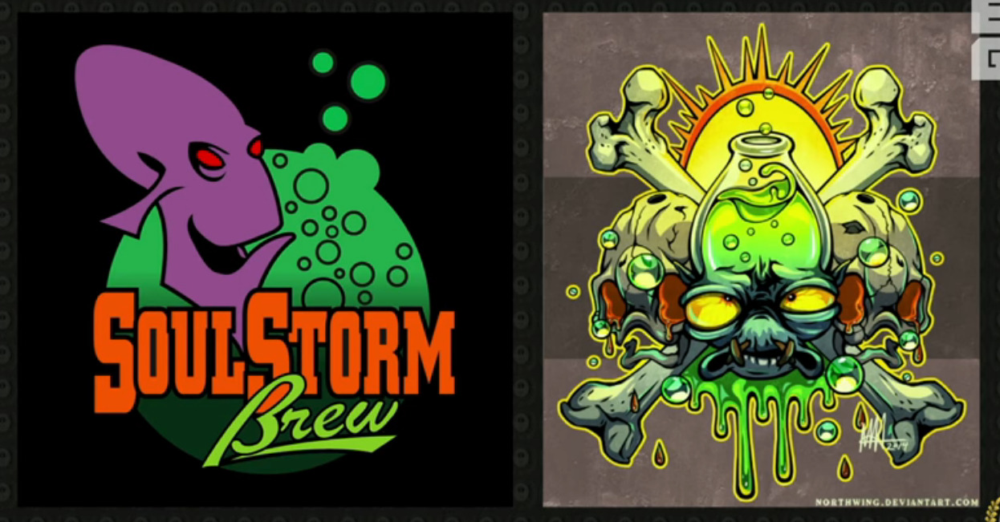Soulstorm is revealing that story in greater depth and this was a fan art that was created and I was like: "Oh wow, that's perfect!" Because that's more of the embodiment of sort of what the brew really is.
Now, has anyone been following our ARG at all? Okay, a few people. So the ARG is all back story. That's where we're touching on, and what I'm going to show you right now is what we call the teaser trailer to the backstory.
[The screen shows the Soulstorm teaser trailer playing.]
So you got to see that first no-one's seen that yet. As you can tell we're really lightening the mood, yeah. It's getting back to that origin, you know. And in doing that another thing that we were dealing with, we were trying to create in the beginning, was these 3D databases, you know. When we started we started launched Oddworld as a company in 1994 its 3D software was still pretty crude. Toy Story, the movie had yet to be made. And if you look these are really all Abe. Like there's Abe and we said, "Well Abe has stitches, the other doesn't!", right?

But we didn't have the time or the money to try and make complex 3D animated characters, that all had the different personalities, so there were kind of digital clones of themselves. And those were just constraints that we lived with trying to create a more interesting 3D birthed in 3D property and there wasn't many at that day, you know. Mario had just sort of made the conversion and... But there wasn't like big game IP at that day that was born in 3D and we wanted Abe to be that. But at the time we still couldn't do hair, we couldn't do cloth very well, I mean it was you know it's 20-some years ago, right? It's my hair, it's a confession too. And then, so we in upgrading the characters to this 21st century of tech, there's Abe from Exoddus, which was basically the Abe from Oddysee.

And it was like, "How do we take Abe and make him more mature? How do we get our textural quality, our rendering quality up into more of that industrial light of magic zone of [cool?] creature quality?", and all that and so this is the new Abe, but he's reminiscent of the old Abe, but hopefully even more empathetic.
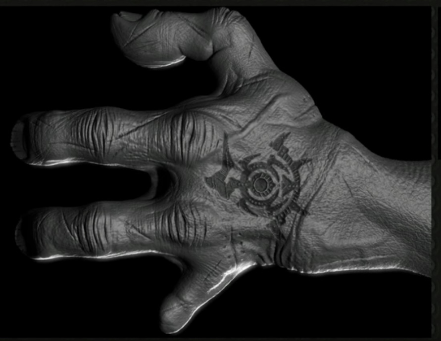And as we look at the things like his tattoos, things that... I was just talking to Caddy and I owe him dinner, because he... If you guys are familiar with the Youtuber Caddy, yeah hand for caddy, he's been a huge supporter. Thank you, man! So he sent me pictures of the tattoo and of course I didn't believe they were real, cuz I thought he just drew him on there and was messing with me like most people do and I said I'll take you out to a great dinner if that's true. And then it turned out there was two so I own two great dinners now. This is just like, "Damn that gets expensive!", but we had an interesting problem because these tattoos and the symbols and the beginning of the Abe's Oddysee they were kind of simple but really they should have had more magical qualities integrated them into like voodoo or like various mysticism practices around the world. We wanted to get that but we didn't want to change the design, so the designs - just like Abe - had to get more complex.
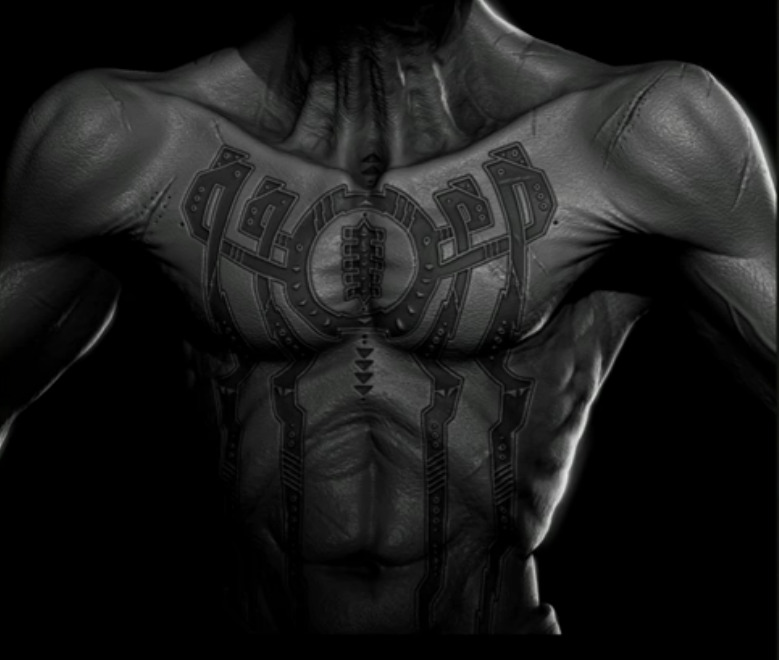But that complexity didn't take them away from their origin. So they just evolved but they didn't change and that goes to the characters too. So now finally we're able to, because you guys supported us through New 'n' Tasty and we're self-financing this ourselves, so we're not a huge entity. We're kind of crazy. We just put it all back on red and if we do it right we have the faith that you're going to support us.
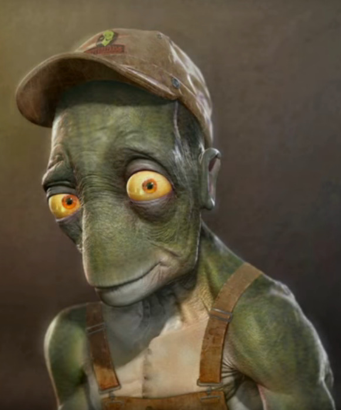So this is Alf before he was Abe's database, with the one hat. But this is the new database, these are the 3D databases and these are what's going in the game.

This is Toby. So Toby's a new character that's on this venture. And as you can see in some ways they're getting even more endearing like Toby, because the world's getting that much darker and more intense. So if you got to have a really dark and intense world, you need even sweeter guys to like light on fire or something. So and that happens. And in this we look at Molluck and where he was. And this is the Molluck from New 'n' Tasty, which was basically the Molluck from Abe's Oddysee, with slightly better texture maps, but we didn't have the budget to take him to the next level, like we're doing now.

And the next level is to get them closer to what we would call a film quality that's not a cartoony vibe but it might have some animated type styling and the new Molluck is taking on another degree. So this is more post lightning bolt hitting him in the head and I'll focus a little more on where he's going.

But on all these Glukkons... The Glukkons also, they were just the same model squashed and stretched, they were, you know... Anything we could do to try and separate out the differences of personality, but we had to do it in really practical, efficient ways. And this time as we go through the Glukkons, we always looked at them more like they were... The cousins would be Glukkons, but they'd have different genetic traits. So, as we go across the different cast of characters of Glukkons, and starting with the eyes.
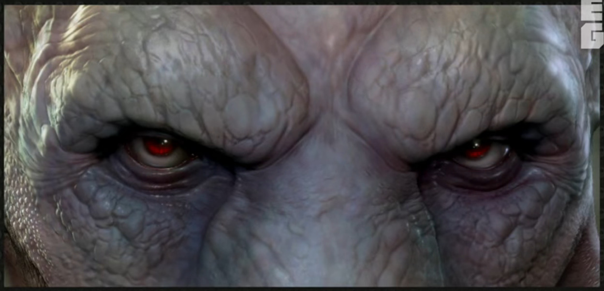We wanted to get much deeper into who they were. And I was telling someone I go "Yeah, this guy's incompetent.", and they go, "No, he's not. No, no, he's not incompetent." It's like, well in some ways but not in others.

So we wanted to focus more in on those personalities, deeper and richer.
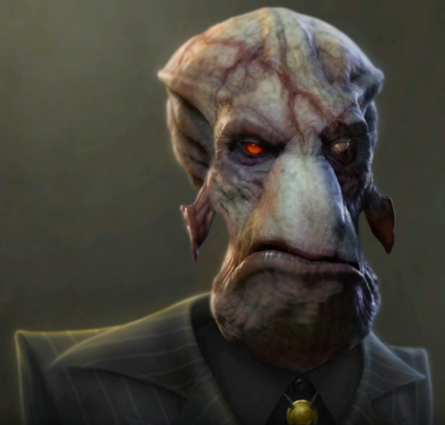Molluck post RuptureFarms. So now he's got the "Mark of Cain", you know, across them. He's blind in one eye and he's got a serious ax to grind.
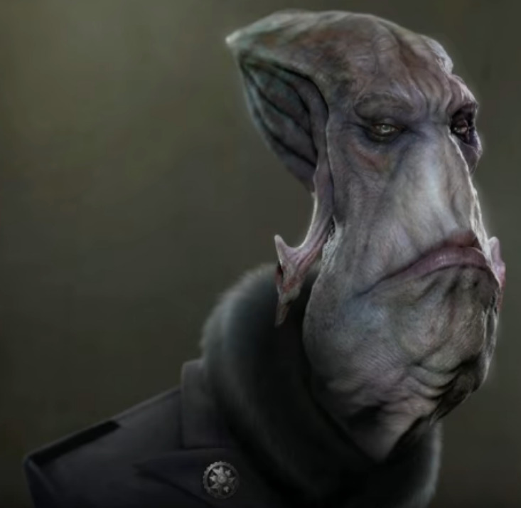We've renamed all the Glukkons that come with the other factories, so Aslik, Dripik and all of this. These are different guys now, as we were getting more away from what that original story was. This is focusing on the later story.

And these are the databases.

So Abe is shaking up this cartel of c-class entrepreneurs, they come from families that basically breed managers at the C level, CEOs, CFOs, CTOs. And they've been entrenched in their businesses, kind of like Game of Thrones for so long, you know, "This house has been in power for a thousand years, an alliance with that." These guys been so entrenched for so long that they live in a different reality from where the slave class lives. And they're arrogant. They're arrogant and they're prejudiced. And they would never imagine that this could happen. What's left of RuptureFarms, because of some damn Mudokons that are just on the bottom of the totem pole.

So Molluck finds out that no one's even going to believe him what went down so they think he just burned the place and was out for the insurance money and got caught, right? So as he's trying to be like "You guys need to be aware, there is this Mudokon uprising happening!" They're like "Right... Right... Yeah, so what are you up to?" And their incompetence and their extreme prejudice is going to start supplying the path for Abe to succeed and these are new.
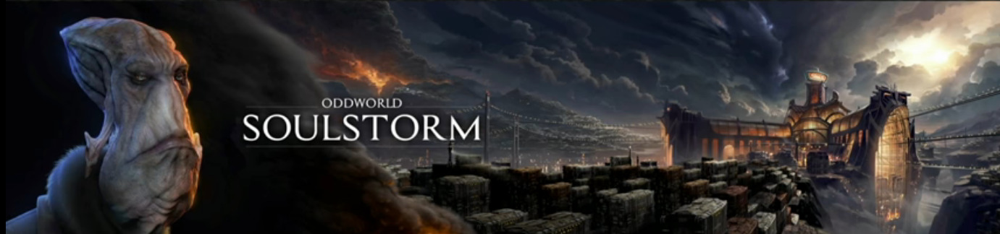This is the new FeeCo Depot, it's going to be the way that he's able to succeed. It's their arrogance, it's their prejudices. Their mind set of what the slave class is. And how... What is beginning to happen, should have never happened and they don't even believe it's happening to their detriment.
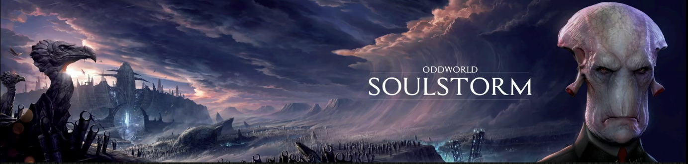This is Necrum. And these paintings are really, actually huge. Like we're doing them at like 16,000 lines of resolution. This is Raymond Swanland painting on the left, Glukkon by myself and Chris at... And Tom who's bringing them all out in ZBrush and all... A few different parties in different studios around the world helping to bring these guys together.

The new SoulStorm Brewery which is like factory of ultimate enticement, feeling like a casino in Vegas on the landscape, but it's really one of the places of one of the darkest most manipulative origins that's going on, that is really the mystery of Soulstorm to be solved in the game.
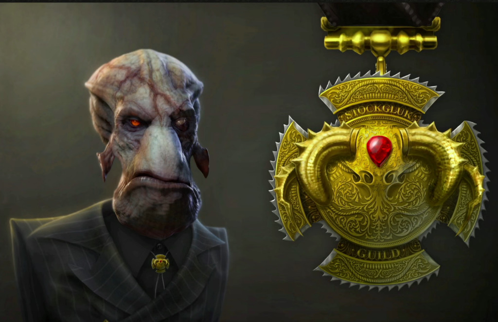Now the other thing we don't realize we're shaking up yet in the property is the societies, the organizations, the foundations, the temples, the orders, that these prevailing financial powers have nurtured themselves into over the years. So this is like the Stockglukk's, there's a class of people that run the slaughteryards, breeding of meat and distributing of that, and it's like a deep order you know, not that unfamiliar with like the Masons or the Templars or different groups that have entrenched in business over the years. And so we spend a lot of time on the on the medallions and the awards of this class and their groups.
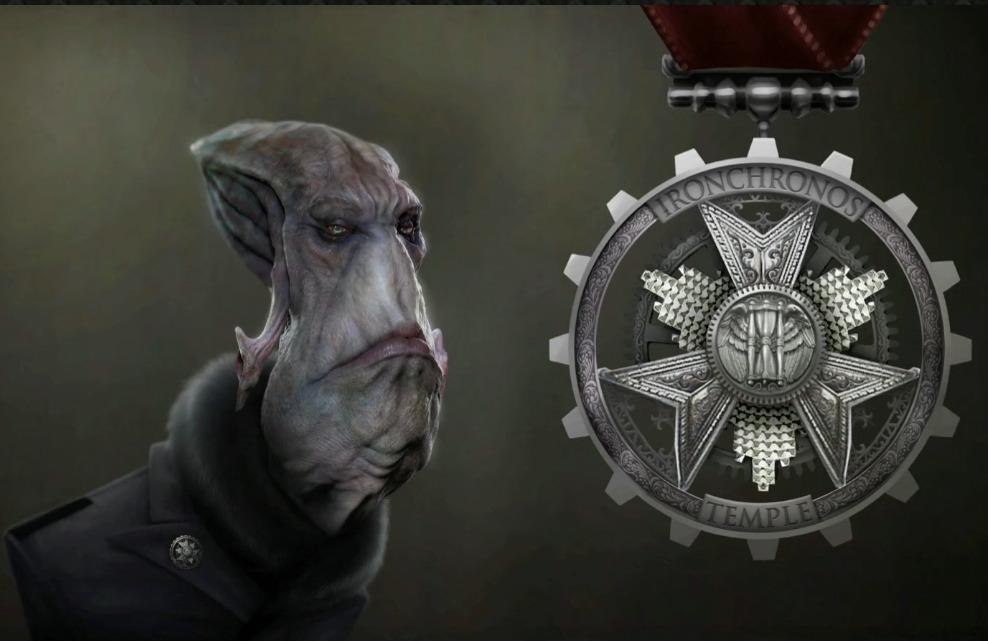This is those that operate the trains on time, we call it the "Ironchronos" guild and temple.
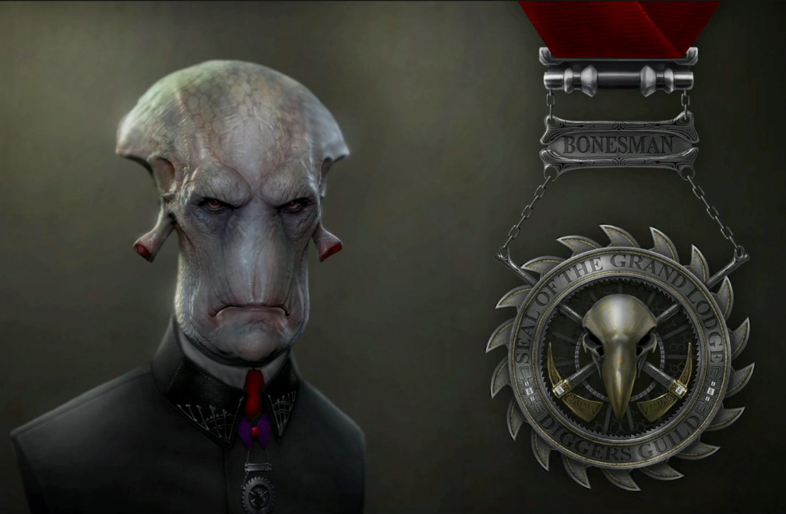The diggers! Those that are robbing the bones, those that mine bones for different pharmaceutical products, for different consumer products, for different reasons.
The society of Alchemic Sciences is which gets into who's designing the brew and what is it really, and how deep does that go.
[A black screen is shown, "Managing Followers in a more Dangerous and Dynamic World" is written on it.]
And now as we get into... How deep am I? What time am I? I'm 27 minutes in, okay. We wanted to do a much longer question-and-answer this year because last time we were here everyone wanted it longer, so I'm trying to get to the end. Now I'm not able to show you game footage today, because we're in process of securing some larger partnerships to get us physical distribution again and there's announcements that want to be made with that, and we've been asked to hold back on those types of materials, until those deals are done. But I tried to do the next best thing, which is to show you the problems that we started to have to solve based on followers. And followers is what Abe is really about if we go to who Abe is as a game, we go "It's really about followers and thinking puzzles.", right? Like if you were to deduce there you go what is Abe, you go "Yeah it's kind of smart puzzles that you have to solve but you solve them through action and it's all about rescuing guys." But what we want to do is the more followers you have, the more spiritual power you have so what I'm going to show you here is this is just the UI and the game screen behind it is black. Okay, sorry but the UI will hint at more of what we had to deal with and managing all this. And so here...
[A video is started. We see a basic UI, showing things like "Health", "Ammo", "CHI" and "Moolah".]
I'm gonna start to play and what you'll see is down the bottom, we have a system that had the Abe's health, his inventory, his CHI status and as he collects followers, these followers are becoming much more difficult to manage. And the reason is...

Sorry about that. The reason is, is that in the previous games even New 'n' Tasty, the Mudokons... They couldn't even jump over a gap, right? Let alone hoist up or follow you through [aversive?] conditions. So they were very limited capacity beasts of burden, and while they helped your high score, they didn't help you. They weren't like allies, that could fight for you, that could be used like tower defense, and placed in different places, and do things, and be set to different aggressive modes, the way you can arm them, and where you can manage a lot of them. And all that is happening now in Soulstorm But what that meant was it becomes a more dynamic environment, where sometimes your Mudokons are not all on screen, because you've put them to work doing other things, right? So, how do you manage that? How do we manage that on an UI level? So this is where we had to create the icon system of the Muds following you. So this is as you "Hello" and "All o' ya" and you start gathering larger groups.
[Lanning accidentally skips to another page.]
Oops! And you start gathering larger groups of them two things are happening the accumulation of the meter you can tell how many are following you, you can tell if they're being put to work or being damaged or whatever, but as you create more followers... You see that glow? That's your CHI. So your spiritual power is increasing, which means the things you can buy with that currency are opening up and increasing, and now you can start to tell even if there immediately in your vicinity or not, if they're taking damage they're flashing red, if they turn red they're flashing, if they get killed... Ah, sorry about that. I have problems pausing this at the right spot. Sorry! So as they as they start flashing... Whoops! So it's basically giving you more ways to monitor what's happening with these guys, that are much more dynamic and much more than just beasts of burden, but becoming active allies on the screen with you at the same time in mass quantity. Now as that's happening, in a world of flammable brew, if you saw the early releases we did on New 'n' Tas-, on Soulstorm, we said we're gonna get more dynamic, we're gonna get more highly volatile, it's gonna be slightly darker, and it's gonna be a lot more intense. So let's just say brew, one of the side effects of brew is that it's highly flammable. And everyone's addicted to it! So the combination makes for some extremely dangerous and... Gameplay that starts unfolding, which means in the old world of Abe he had to have a... He now has to have a much more robust inventory, which in the past he didn't have it, was like one for on,e you got a rock to throw it, a bag of meat to get the meat, so you could deal with Paramites or Slogs. It was one to one but we needed a much more complex system, if we're dealing with like a guy catches fire because I use brew but I don't want him to die, how do I put him out? And that led to needing to have many more pickup items. Now, if you just saw that's Abe collecting items in the world, which led to...
[Lanning accidentally goes to another page.]
Sorry about this! How do I build a game if I can't run a video? Okay, so in that landscape, where you need a lot more managing that meant, we needed a lot more abilities to manage, and that meant we had to create an inventory system, and now Abe has a robust inventory system that is largely like consumer products that he can get.

And those consumer products, he can start converting into weapons and he can have then start finding with collectibles crafting those weapons into more specialized things.

So inventory system and crafting has become a key part of what Abe does to get all these Mudokons through the world safely, hopefully. And in this game you trying not to ideally kill the Sligs either. So a perfect play nobody dies. That's hard as hell! You know, there's a lot of PTSD trauma that's going to take place before you achieve that goal, but that's our goal. In the ideal world Abe would have been able to traverse this very different, dangerous landscape and do that without killing anybody not even Sligs. And now, where this game picks up is where a New 'n' Tasty left off. And we're New 'n' Tasty left off was with 301 freed Mudokons. So this game begins with 301 freed Mudokons, that you're going to try and take with you through the journey, because they don't just disappear into the ether, they're gonna stay with you and at times in real time, in play you'll be managing the survival of this many guys on screen at one time. Now unfortunately, like I said, I'm not showing game screens I'm not showing gameplay, but I just gave a big indication of how this is a very different game, but it builds on what we believe was at the heart of what made Abe special, and it reignites our part two of the five in the Quintology. So that's what we were showing today and we're open it up to Q&A for the rest.